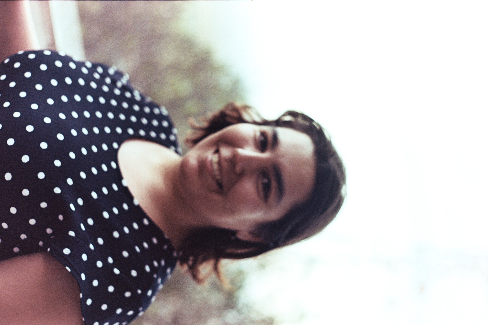
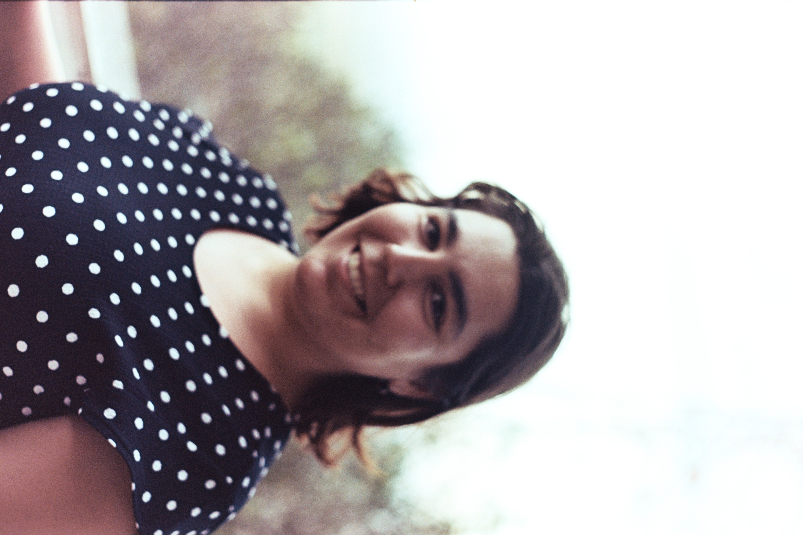
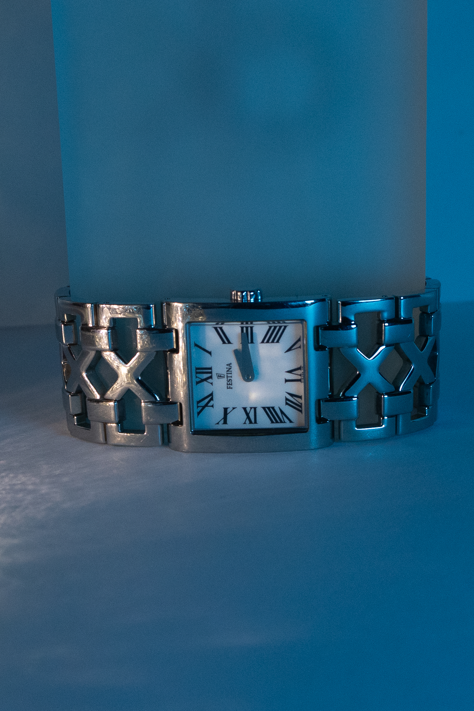
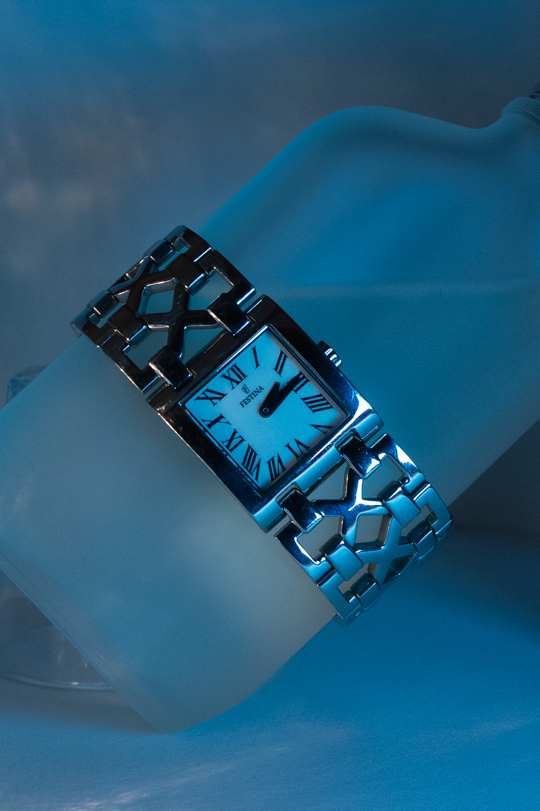
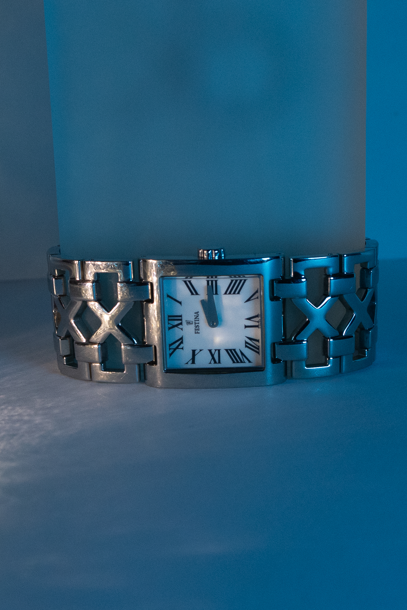
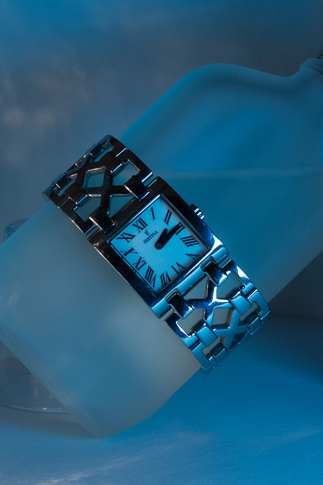

Photographer and videographer
Hi, I'm Tiago Costa
Biography
Nascido em 1999, na Azambuja, a vinda para as Caldas deu-me mais abertura na área que realmente gosto. Tenho um gosto desde pequeno, visto que roubava a camara a rolo dos meus pais e tirava fotografias a tudo. Estive em Ciências, mas a vontade de aprender mais na área levou-me a ir para um profissional de Multimédia. Em 2018 entrei na ESAD.cr no TesP de Audiovisuais e Multimédia e no fim, devido ao Covid, parei um ano. Em 2021 entrei em Design e Multimédia e aqui estamos a acabar a Licenciatura. Com o passar destes anos, fiz alguns trabalhos na área. Espero continuar a poder trabalhar na área e continuar a explorar a área tão vasta que é o mundo da Multimédia.
Projects
Yesterday
Projecto desenvolvido para uma cadeira de praticas de imagem durante o ctesp, foi um projeto muito deivertido, e uma otima experiencia de aprendizagem.
Makinando
Este projecto foi desenvolvido em parceriam, com a produtora de eventos para a documentaçao do festival em Leon, foi uma otima experiencia e uma grande aventura


Analog photography
projecto pessoal de arquivo de fotografias analogicas que serve de arquivo pessoal e desenvolvimente de capacidades fotográficas


 

fotografia de relógios
Projeto de fotografia de produto desenvolvido para por em prática tecnicas da tematica


 





Ligados as máquinas
Projecto desenvolvido como prova de aptidao profissional, em consistia documentar as aspiraçôes e opiniões dos colegas sobre o curso de técnico de Multimédia.
Services
ofereço varios tipos de Serviços incluindo fotografia e direção de cinematografia
- Fotografia de eventos
- Direção de cinema
- Edição de fotografia
Contact
Email: tiago.a.l.costa.19@gmail.com